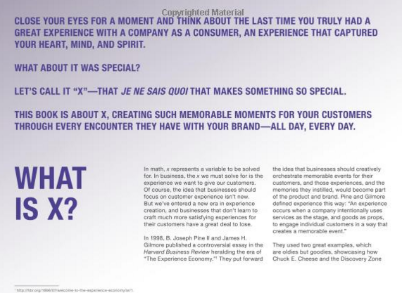

Week 1 - The first 'digital native' font
Today I read an interesting article about San Francisco, the new font created by Apple for its iOS9.
The San Francisco is considered a “digital native” font for the digital age. The font was designed to be easy read in any screen and device (from small watches to big retina displays).
It is interesting how the font do not use legibility if it is used in a interface for small devices. I think we will see more “digital native fonts” in the next years.
Week 2 - Ebooks and censorship
When books become digital, they also become data. I think it's open opportunities to many things like discovering written patterns by text-mining techniques. One opportunity, of course, is to run queries in a bunch of books. Today I discovered an application that do that. The name is Clean Reader. The app does a searching in all of your books and cleaning up texts that are considered obscene. The technology open path for censorship. But I think it is one more example how technology is a double-edge sword.
Week 3 - Readers expect more innovation from ebook companies
The research Information published an interesting article about innovation in the publishing field. According to the article, innovation is essential if a publishing company want to survive in the future. The expectations of digital readers is becoming higher and higher.
I highlighted one excerpt:
"So our player technologies, for example, can’t be simple play buttons they have to be interactive apps in their own right, and that’s why we develop things like synchronised transcripts, and clip making capabilities, annotation capabilities, and playlisting is very important."
In other words, digital readers are demanding more and more discoverability
Week 4 - Printed books are using design elements from ebooks
At Teleread weblog, website focus on ebooks, I found an interesting article about Skeuomorphism on electronic publishing. The traditional trend is that ebooks try to emulate elements from printed book. But according to Brian Sollism, digital consultant, the reverse movement is happening - printed books are starting to using design elements from ebook.
A book is a book, but it is very inspiring to see this movement.
Week 5 - Good guide about coding a ebook
Today I bought for only US$ 3 a good book about coding ebooks. The author Elizabeth Castro did a good job. Some parts are outdated, of course. But, in general, the basic is there - how to code an ebook from scratch